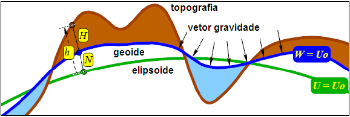
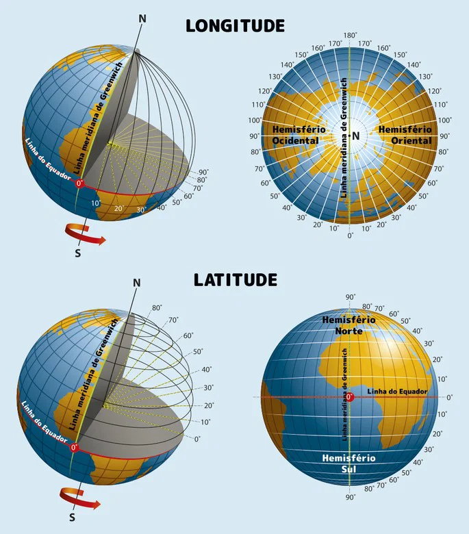
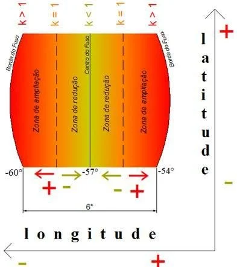
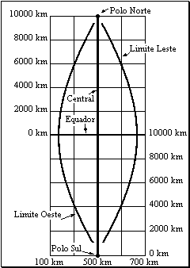
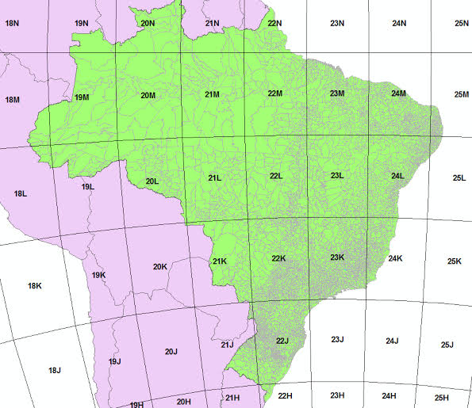
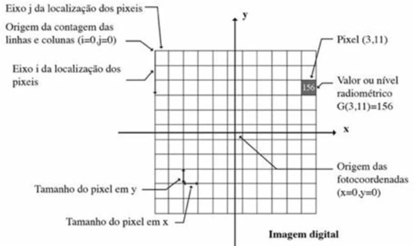
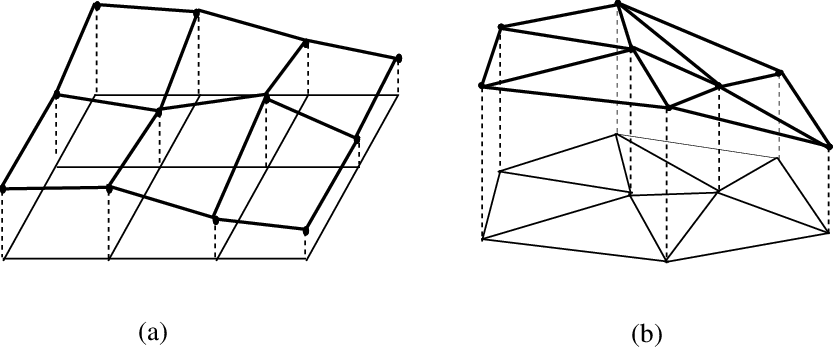

Módulo 1
Introdução às Geotecnologias aplicadas a Gestão de Recursos Hídricos
As geotecnologias desempenham um papel fundamental na Gestão de Recursos Hídricos (GRH), permitindo o monitoramento espacial e temporal, a modelagem hidrológica e o suporte à tomada de decisão no planejamento de bacias hidrográficas.As principais geotecnologias e suas aplicações na gestão das águas estão organizadas a seguir:
- Sistemas de Informação Geográfica (SIG)
O SIG é a plataforma central onde dados espaciais e alfanuméricos são integrados, armazenados e analisados. Delimitação e Caracterização de Bacias: Obtenção automática de limites de bacias hidrográficas, redes de drenagem e parâmetros morfométricos (área, percurso principal, declividade). Cadastro de Usuários e Outorgas: Mapeamento de captações de água (superficiais e subterrâneas), lançamentos de efluentes e barragens para gestão de direitos de uso. Análise de Conflitos pelo Uso da Água: Sobreposição espacial da oferta hídrica com a demanda alocada para identificar áreas críticas ou em estresse hídrico. Mapeamento de Vulnerabilidade e Risco: Identificação de áreas suscetíveis a inundações, enxurradas, secas e contaminação de aquíferos (ex.: método DRASTIC).
- Sensoriamento Remoto (SR)
A aquisição de dados por satélites, aeronaves e RPAs (drones) permite o monitoramento contínuo e em larga escala dos corpos d’água e do uso do solo. Monitoramento da Cobertura e Uso da Terra: Mapeamento das transformações na bacia (desmatamento, urbanização, expansão agrícola) que impactam diretamente o ciclo hidrológico e a qualidade da água. Estimativa de Evapotranspiração e Balanço Hídrico: Uso de sensores térmicos e ópticos (ex.: Landsat, Sentinel, MODIS) com algoritmos como SEBAL ou METRIC para quantificar o consumo de água na agricultura irrigada. Qualidade da Água e Turbidez: Sensoriamento óptico para estimar parâmetros como clorofila-\(a\), sólidos em suspensão e matéria orgânica dissolvida em reservatórios e grandes rios.Altimetria por Satélite: Monitoramento de variação de nível d’água em grandes lagos e rios navegáveis (ex.: missões SWOT, Sentinel-3). Umidade do Solo e Gravimetria: Uso de dados micro-ondas (SMAP, Sentinel-1) e gravimétricos (missão GRACE) para monitorar armazenamento de água no solo e variação de reservas subterrâneas.
- Modelagem Hidrológica e Geoespacial Integrada
A integração entre modelos matemáticos hidrológicos e ambientes SIG permite simular cenários futuros e prever impactos ambientais. Modelos Distribuidos e Semidistribuídos: Ferramentas como SWAT (Soil and Water Assessment Tool), MGB (Modelo de Grandes Bacias) e HEC-HMS utilizam dados geoespaciais (MDT, solo, uso da terra) como entrada para simular vazão, escoamento superficial e transporte de sedimentos. Prevenção de Eventos Extremos: Modelagem de manchas de inundação (ex.: HEC-RAS) acoplada a Modelos Digitais de Elevação (MDE) para mapeamento de áreas de risco e planos de contingência.
- Sistemas de Posicionamento por Satélite (GNSS)
Fornecem suporte de precisão para levantamentos de campo e geo-referenciamento de dados. eorreferenciamento de Estações de Monitoramento: Localização precisa de estações fluviométricas, pluviométricas e piezômetros. Levantamentos Batimétricos: Integração do GNSS com ecobatímetros para mapeamento do relevo subaquático de rios, lagos e reservatórios, calculando a perda de volume por assoreamento.
Sistemas de Informação Geográfica (SIG) e Geoprocessamento
Apesar de frequentemente usados como sinônimos, Geoprocessamento e Sistemas de Informação Geográfica (SIG) têm conceitos distintos, embora totalmente complementares. A diferença central é que o Geoprocessamento é a área do conhecimento/tecnologia, enquanto o SIG é a ferramenta prática (software + estrutura) que operacionaliza esse conhecimento.
O que é Geoprocessamento?
O Geoprocessamento é o conjunto de teorias, técnicas, procedimentos e tecnologias aplicados à coleta, tratamento, análise, modelagem e exibição de dados espacialmente referenciados (dados que possuem localização no planeta). Trata-se do campo abrangente que envolve diversas disciplinas e tecnologias de informação espacial:
• Cartografia Digital e Geodésia: Fundamentos de projeções, sistemas de referência (SIRGAS2000) e precisão espacial. • Sensoriamento Remoto: Obtenção de imagens por satélites, aviões ou drones. • Fotogrametria: Medições precisas a partir de fotografias aéreas e nuvens de pontos. • Sistemas de Navegação (GNSS): Coleta de coordenadas em campo via GPS, GLONASS, Galileo, etc. • Análise Espacial e Geoestatística: Métodos estatísticos para entender padrões espaciais, interpolações (ex.: Krigagem) e modelagem de superfícies.
O que é um Sistema de Informação Geográfica (SIG / GIS)?
O SIG é o sistema computacional (integrando hardware, software, dados, metodologias e pessoas) projetado para capturar, armazenar, manipular, analisar e visualizar dados geograficamente referenciados.
A principal característica de um SIG é a integração entre o dado espacial (a geometria) e o dado alfanumérico (a tabela de atributos).
Sistema SIG
| Componente | Exemplo |
|---|---|
| Dados Geográficos | Vetores / Rasters |
| Tabela Atributos | População, área |
| Software | QGIS, ArcGIS |
| Análise Espacial | Overlays, Buffers |
Estrutura Fundamental dos Dados num SIG:
- Dados Vetoriais: Representam elementos discretos usando geometrias simples:
o Pontos: Poços, estações fluviométricas, focos de incêndio. o Linhas: Rios, redes de drenagem, vias, tubulações. o Polígonos: Bacias hidrográficas, limites municipais, uso do solo.
- Dados Matriciais (Raster): Representam superfícies contínuas por meio de uma grade de pixels (células), onde cada pixel possui um valor:
o Modelos Digitais de Elevação (MDE/MDT). o Imagens de satélite e ortofotos. o Mapas de temperatura, declividade ou precipitação.
- Principais Funções de um SIG
• Aquisição e Entrada: Importação de arquivos vetoriais (Shapefile, GeoPackage), matriciais (GeoTIFF) ou dados de bancos de dados espaciais (PostGIS). • Armazenamento e Gestão: Organização de grandes volumes de dados geoespaciais e seus atributos estruturados em tabelas relacionais. • Análise e Consulta Espacial: Realização de operações como cruzamento de camadas (overlay), criação de zonas de influência (buffer), análises de vizinhança e modelagem de redes. • Cartografia e Visualização: Elaboração de mapas temáticos, cartas topográficas, layouts para impressão e dashboards interativos.
Sistemas de Referência de Coordenadas (Datum, Projeções UTM e Geográficas)
Entender Sistemas de Referência de Coordenadas (SRC) é o primeiro e mais decisivo passo para garantir a integridade rigorosa de qualquer análise espacial ou modelagem ambiental. Em projetos de engenharia — seja na modelagem de dispersão de poluentes, no balanço hídrico de uma bacia ou na análise de uso e cobertura do solo —, um erro de SRC pode deslocar seus dados em dezenas ou centenas de metros, invalidando simulações e cruzamentos de dados.
A Forma da Terra e o Datum: Da Física à Geometria
A Terra não é uma esfera perfeita, tampouco um elipsóide homogêneo. Para fins de representação espacial, trabalhamos com três superfícies principais: Superfície Topográfica: A superfície real, irregular e física onde ocorrem os fenômenos ambientais. Geóide: A superfície equipotencial do campo de gravidade da Terra que melhor se aproxima do nível médio do mar em repouso. É a referência física para altitudes ortométricas (relevantes para dinâmica de fluidos e escoamento superficial). Elipsóide de Referência: Uma figura matemática geométrica (resultado da rotação de uma elipse) usada para simplificar os cálculos de posição.

O que é o Datum?
O Datum é o modelo matemático que define a orientação, o centro e as dimensões do elipsóide em relação à Terra. Ele estabelece a origem (0,0,0) do sistema de coordenadas.
Datuns Topocêntricos (Locais): Ajustados para minimizar as deformações em uma região específica, fixando a origem na superfície (ex.: SAD69 ou Córrego Alegre no Brasil).
Datuns Geocêntricos (Globais): A origem do elipsóide coincide com o centro de massa da Terra (baricentro). São a base dos sistemas globais de navegação por satélite (GNSS).
WGS84: Datum padrão do sistema GPS.
SIRGAS2000: Sistema de Referência Geocêntrico para as Américas, oficial e obrigatório no Brasil desde 2015.
Atenção Prática na Pós-Graduação: Reprojetar camadas ou converter vetores sem definir corretamente o Datum de origem causa o conhecido erro de Datum (no Brasil, a conversão incorreta entre SAD69 e SIRGAS2000 gera um deslocamento sistemático de aproximadamente 65 metros).
Coordenadas Geográficas (Angulares)
O sistema de Coordenadas Geográficas localiza qualquer ponto na superfície terrestre por meio de dois ângulos medidos a partir do centro da Terra, tendo como referência o elipsóide adotado:

Características Relevantes para a Engenharia Ambiental:
Unidade de Medida: Graus, minutos e segundos (DMS) ou Graus Decimais (DD).
Não preservam distâncias ou áreas constantes: Um grau de longitude no Equador equivale a aproximadamente 111” km” , mas converge para 0” km” nos polos.
Uso Ideal: Armazenamento de bases de dados continentais/globais, intercâmbio de dados e representação de amplas extensões geográficas. Não deve ser utilizado para cálculos diretos de área, perímetro ou distâncias em projetos locais/regionais.
Coordenadas Planas UTM (Projeção Universal Transversa de Mercator)
Para realizar cálculos euclidianos simples (A=b×h, distâncias em metros) e trabalhar em ambiente CAD/SIG, é necessário projetar a superfície curva do elipsóide em um plano. A projeção UTM é o sistema conforme mais utilizado na engenharia.

Propriedades da Projeção UTM:
- Cilindrica Transversa e Secante: O cilindro de projeção envolve a Terra transversalmente ao eixo de rotação e intercepta o elipsóide em duas linhas secantes.
- Conforme: Preserva os ângulos e as formas locais, mas altera distâncias e áreas à medida que se afasta da linha central de projeção.
- Divisão em Fusos (Zonas): O globo é dividido em 60 fusos transversais de 6^∘ de longitude cada, numerados de 1 a 60 a partir do anti-meridiano de Greenwich (180^∘ “W” ) em direção a Leste.
O Sistema de Coordenadas Métricas no Fuso UTM:
Para evitar valores negativos e facilitar a identificação, cada fuso possui uma origem local própria:
- Eixo X (Easting / Este): O Meridiano Central (MC) de cada fuso recebe arbitrariamente o valor de 500.000” m” . Valores a oeste do MC são menores que 500.000” m” ; valores a leste são maiores.
- Eixo Y (Northing / Norte):
- Hemisfério Norte: O Equador é a origem com valor 0” m” .
- Hemisfério Sul: O Equador recebe o valor falso de 10.000.000” m” , decrescendo em direção ao Polo Sul (garantindo que todas as coordenadas Y no Hemisfério Sul sejam positivas).

No Meridiano Central do fuso, a escala sofre uma redução de 0,9996 (k_0=0,9996) para minimizar as deformações nas bordas do fuso, onde k>1.

Estruturas de Dados Geoespaciais
Para os estudos avançados em Engenharia Ambiental e Modelagem Hidrológica, a escolha da Estrutura de Dados Geoespaciais determina não apenas a precisão da representação do mundo real, mas também a eficiência computacional dos algoritmos de análise. No ambiente computacional, a realidade geográfica é abstraída primariamente em dois modelos fundamentais: Vetorial e Matricial (Raster), complementados por estruturas tridimensionais avançadas para modelagem de superfície.
Modelo Vetorial (Vector Data Model)
O modelo vetorial utiliza a geometria euclidiana para representar feições geográficas discretas com limites bem definidos. Cada feição é associada diretamente a uma tabela de atributos alfanuméricos.
Ponto (Zero Dimensões): Definido por um único par de coordenadas (X,Y). Usado para feições pontuais onde a área não é relevante na escala de análise (ex.: estações fluviométricas, poços de monitoramento, pontos de amostragem de água).
Linha / Polilinha (Uma Dimensão): Sequência ordenada de pontos conectados por segmentos de reta (vértices e nós). Representa elementos lineares (ex.: cursos d’água, redes de esgoto, rodovias).
Polígono (Duas Dimensões): Linha fechada cujos vértices inicial e final coincidem, delimitando uma área interna. Representa feições contínuas e discretas (ex.: limites de bacias hidrográficas, manchas de inundação, reservatórios, polígonos de uso do solo).
Vantagens e Limitações do Modelo Vetorial:
Vantagens: Alta precisão de localização; excelente definição de limites e topologia; topologia de redes para modelagem de fluxo (direção do rio, redes de abastecimento); arquivos geralmente compactos para feições discretas.
Limitações: Estrutura de dados complexa; inadequado para representar fenômenos contínuos que variam suavemente no espaço (ex.: precipitação, temperatura).
Modelo Matricial (Raster Data Model)
O modelo matricial representa a superfície por meio de uma grade (grid) contínua de células bidimensionais (pixels) organizadas em linhas e colunas. Cada pixel possui uma dimensão espacial fixa (resolução espacial) e armazena um único valor representativo do fenômeno.

Propriedades Chave: * Resolução Espacial: Dimensão do pixel no terreno (ex.: um pixel de 30” m”×30” m” no SRTM representa 900〖” m” 〗^2). * Fenômenos Contínuos: É o modelo ideal para variáveis que mudam continuamente no espaço, como altitude, declividade, precipitação, temperatura e índices de vegetação (NDVI).
Vantagens e Limitações do Modelo Matricial: * Vantagens: Estrutura de dados simples (matrizes); processamento eficiente para álgebra de mapas e modelagem matemática (operações célula a célula); ideal para imagens de satélite e dados de sensoriamento remoto. * Limitações: Arquivos volumosos em altas resoluções; perda de precisão geométrica dependendo do tamanho do pixel (efeito “pixelado”); conversões frequentes vetorial-raster geram degradação dos dados.
Modelagem de Superfície: MDE, MDT e TIN
Na engenharia ambiental, a representação do relevo é crítica para a definição de linhas de cumeada, direções de fluxo e acúmulo de escoamento. Três nomenclaturas e estruturas são fundamentais: Matriz Regular (Raster/MDE) TIN (Rede de Triângulos Irregulares)

Modelos de Elevação (Raster):
-> MDE (Modelo Digital de Elevação / DEM): Termo genérico para grades matriciais de altitude. -> MDS (Modelo Digital de Superfície): Inclui os elementos acima do solo (copas de árvores, edificações). Obtido via LiDAR ou Fotogrametria. -> MDT (Modelo Digital do Terreno): Representa exclusivamente a superfície nua do terreno (bare earth), essencial para hidrologia após a filtragem da vegetação. -> TIN (Triangulated Irregular Network): - Estrutura vetorial tridimensional baseada em uma rede de triângulos não sobrepostos formados a partir de pontos de cota conhecidos (Triangulação de Delaunay). - Aplicação: Representa o relevo com densidade variável de pontos — alta densidade em áreas de vale e escarpas, baixa densidade em áreas planas —, otimizando o armazenamento e preservando feições estruturais (linhas de talvegue e cristas).
Prática Hands-on
Exercício Prático: Configuração do QGIS, projeção de camadas e criação de um projeto inicial
Obtenção e organização de dados abertos para recursos hídricos
Vamos visitar o geoportal da INDE: https://inde.gov.br/
Organização de dados:
- Formatos de arquivo;
- Organização de pastas;
- Organização de camadas;
Consulta de dados vetoriais:
- Filtragem;
- Seleção por atributo;
- Seleção por área;
(rede de drenagem, outorgas, estações fluviométricas/pluviométricas e redes de abastecimento/esgotamento).